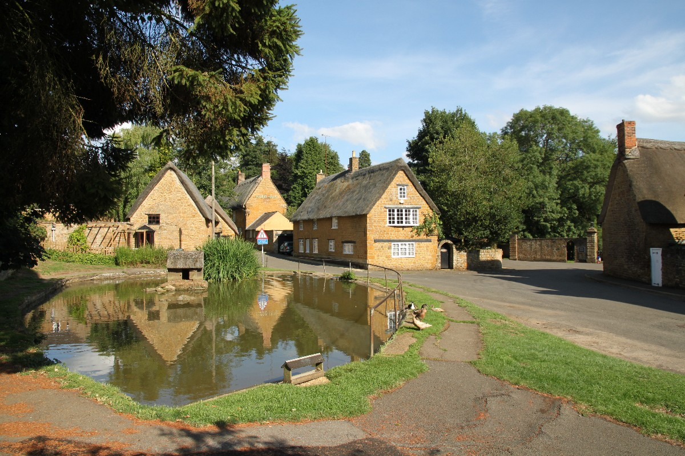

Book the Village Hall
Check for Avaliability, Make a Booking, or Just make a general enquiry

Check out What's On
Look at what events are coming up in this village.
Look at the latest news
Check out what is going on in this community